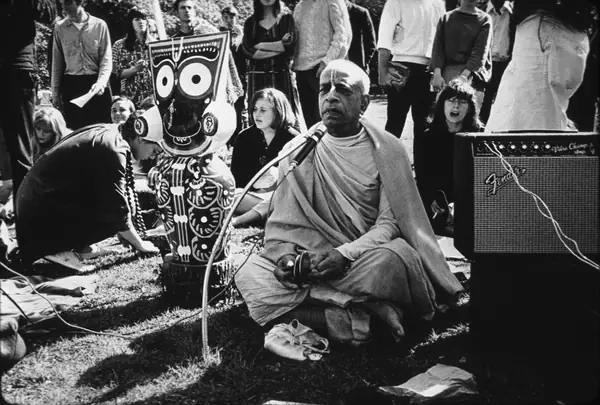

This page presents the official GBC foundational document affirming the unique position of His Divine Grace A. C. Bhaktivedanta Swami Prabhupāda as the Founder-Ācārya of the International Society for Krishna Consciousness (ISKCON).
Śrīla Prabhupāda
Founder-Ācārya and Preeminent Śikṣā-Guru of the International Society for Krishna Consciousness

Start here
Welcome to Vanipedia, a dynamic, living encyclopedia of Śrīla Prabhupāda’s words (vani). We are building an unparalleled digital repository of his text, audio, video, and images, comprehensively compiling his teachings from every angle of vision.
Introductory articles
- Absorbed in Thought of GodPractical Methods to Absorb the Mind
- Predicament of Modern ManSolution for Modern Age
Browse topics
Prototype: dotted links are not built yet.
Read & listen
Nectar Drops from Srila Prabhupada
Śrīla Prabhupāda in the Media
Chula Vista Star News (1976)
A Message of Peace and Pure Spiritual Realization
Disciples Remember Śrīla Prabhupāda
- Yaduvendu dāsa
Personal eyewitness recollections, intimate exchanges, and devotional memories with His Divine Grace Śrīla Prabhupāda recounted by Yaduvendu das.
- Naikātma dāsa
Articles
- AI-assisted. Quotations verbatim; framing generated. See Methodology.Process to Achieve the Desired Success
- AI-assisted. Quotations verbatim; framing generated. See Methodology.Śrī Caitanya Mahāprabhu’s Grandfather Nīlāmbara Cakravartī
- AI-assisted. Quotations verbatim; framing generated. See Methodology.The Perils of Having No Idea
- AI-assisted. Quotations verbatim; framing generated. See Methodology.Assisting Kṛṣṇa: The Perfection of Devotional Service
- AI-assisted. Quotations verbatim; framing generated. See Methodology.Everyone Is Trying to Become the Master
- AI-assisted. Quotations verbatim; framing generated. See Methodology.Struggle in Conditioned World